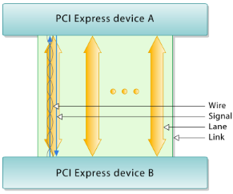

What is PCIe
How does PCIe work
https://en.wikipedia.org/wiki/PCI_Express#ArchitectureM
Conceptually, the PCI Express bus is a high-speed serial replacement of the older PCI/PCI-X bus. One of the key differences between the PCI Express bus and the older PCI is the bus topology; PCI uses a shared parallel bus architecture, in which the PCI host and all devices share a common set of address, data and control lines. In contrast, PCI Express is based on point-to-point topology, with separate serial links connecting every device to the root complex (host).
Usage of lane The PCI Express link between two devices can consist of anywhere from one to 32 lanes. In a multi-lane link, the packet data is striped across lanes, and peak data throughput scales with the overall link width. The lane count is automatically negotiated during device initialization, and can be restricted by either endpoint. For example, a single-lane PCI Express (×1) card can be inserted into a multi-lane slot (×4, ×8, etc.), and the initialization cycle auto-negotiates the highest mutually supported lane count. The link can dynamically down-configure itself to use fewer lanes, providing a failure tolerance in case bad or unreliable lanes are present. The PCI Express standard defines slots and connectors for multiple widths: ×1, ×4, ×8, ×12, ×16 and ×32.This allows the PCI Express bus to serve both cost-sensitive applications where high throughput is not needed, as well as performance-critical applications such as 3D graphics, networking (10 Gigabit Ethernet or multiport Gigabit Ethernet), and enterprise storage (SAS or Fibre Channel).
PCIe Link

Interconnect
PCI Express devices communicate via a logical connection called an interconnect or link. A link is a point-to-point communication channel between two PCI Express ports allowing both of them to send and receive ordinary PCI requests (configuration, I/O or memory read/write) and interrupts (INTx, MSI or MSI-X). At the physical level, a link is composed of one or more lanes.
Low-speed peripherals (such as an 802.11 Wi-Fi card) use a single-lane (×1) link, while a graphics adapter typically uses a much wider and faster 16-lane link.
Lane
A lane is composed of two differential signaling pairs, with one pair for receiving data and the other for transmitting. Thus, each lane is composed of four wires or signal traces. Conceptually, each lane is used as a full-duplex byte stream, transporting data packets in eight-bit "byte" format simultaneously in both directions between endpoints of a link.
Serial Bus
The bonded serial bus architecture was chosen over the traditional parallel bus due to inherent limitations of the latter, including half-duplex operation, excess signal count, and inherently lower bandwidth due to timing skew. A serial interface does not exhibit timing skew because there is only one differential signal in each direction within each lane, and there is no external clock signal since clocking information is embedded within the serial signal itself.
PCI Express is one example of the general trend toward replacing parallel buses with serial interconnects; other examples include Serial
ATA (SATA), USB, Serial Attached SCSI (SAS), FireWire (IEEE 1394), and RapidIO. In digital video, examples in common use are DVI, HDMI and
DisplayPort.
Layout of Hardware
https://en.wikipedia.org/wiki/PCI_Express#Hardware_protocol_summary
The PCIe link is built around dedicated unidirectional couples of serial (1-bit), point-to-point connections known as lanes. This is in sharp contrast to the earlier PCI connection, which is a bus-based system where all the devices share the same bidirectional, 32-bit or 64-bit parallel bus.
PCI Express is a layered protocol, consisting of a transaction layer, a data link layer, and a physical layer.
Physical layer
At the electrical level, each lane consists of two unidirectional LVDS(Low-voltage differential signaling) pairs operating at 2.5, 5, 8 or 16 Gbit/s, depending on the negotiated capabilities. Transmit and receive are separate differential pairs, for a total of four data wires per lane. A connection between any two PCIe devices is known as a link, and is built up from a collection of one or more lanes. All devices must minimally support single-lane (×1) link. Devices may optionally support wider links composed of 2, 4, 8, 12, 16, or 32 lane
Data transmission
PCIe sends all control messages, including interrupts, over the same links used for data. The serial protocol can never be blocked, so latency is still comparable to conventional PCI, which has dedicated interrupt lines.
Data transmitted on multiple-lane links is interleaved, meaning that each successive byte is sent down successive lanes. The PCIe specification refers to this interleaving as data striping. While requiring significant hardware complexity to synchronize (or deskew) the incoming striped data, striping can significantly reduce the latency of the nth byte on a link.
Data link layer
The data link layer performs three vital services for the PCIe express link:
On the transmit side, the data link layer generates an incrementing sequence number for each outgoing TLP. It serves as a unique identification tag for each transmitted TLP, and is inserted into the header of the outgoing TLP
Transaction layer
PCI Express implements split transactions (transactions with request and response separated by time), allowing the link to carry other traffic while the target device gathers data for the response.
PCI Express is based on point-to-point topology, with separate serial links connecting every device to the root complex (host) PCI Express communication is encapsulated in packets. The work of packetizing and de-packetizing data and status-message traffic is handled by the transaction layer of the PCI Express port.